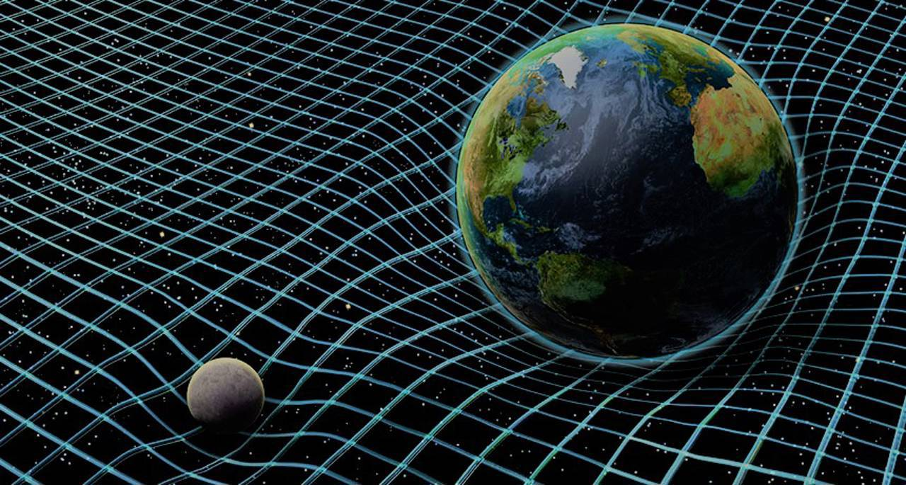

O que é Relatividade?
"A teoria da relatividade é a designação que engloba a teoria da relatividade restrita e a teoria da relatividade geral, do físico Albert Einstein (1879-1955). Ela é empregada nos GPS, nos eletroímãs, nos tubos de raio catódico, nos reatores nucleares, nas bombas nucleares e outros."

Ela é aplicada em tecnologias como GPS, reatores nucleares e tubos de raio catódico. Aplicações e Postulados: Voltada para corpos em velocidades próximas à da luz, a teoria da relatividade é baseada nos postulados da relatividade restrita e da constância da velocidade da luz. Entre as descobertas estão a velocidade da luz como limite máximo e a dilatação do tempo e contração do comprimento em velocidades relativísticas.
Uma consequência do 2º postulado é que o valor da velocidade da luz (3 .108 m/s) é um limite para as velocidades. Nenhum corpo pode se mover com velocidade superior a da luz no vácuo.